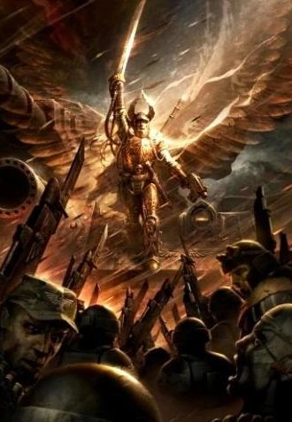

Macharian Crusade
| Macharian Crusade | |
|---|---|
| Also called the Macharian Conquests | |
 Lord Solar Macharius leads the Imperial Guard forward beneath the banners of the crusade Artwork © Games Workshop | |
| Date | 392–399.M41; followed by the Macharian Heresy, 400–c. 470.M41 |
| Location | Western Segmentum Pacificus to the Halo Stars |
| Result | Imperial victory. Nearly a thousand worlds added to the Imperium; the advance halted at the edge of the Astronomican when the army refused to go on; the conquered region fell into seventy years of civil war after the death of Macharius |
| Belligerents | |
| Imperium | Opponents Independent human realms of the western reaches |
| Commanders and leaders | |
| † Killed in action | |
| Units involved | |
| Strength | |
| A hive civilisation on Adrantis Five, more advanced than the Imperium's own | |
| Casualties and losses | |
| Imperium: Tens of millions of troops killed[a] The 5th Army Group lost about nine-tenths of its strength at Adrantis Five alone Macharius killed | Opponents: Whole populations Richter killed on Loki |
| Billions of civilians killed; Adrantis Five struck by a comet that Macharius diverted onto it, killing much of its population[a] | |
The Macharian Crusade, also known as the Macharian Conquests, was an Imperial Crusade led by Lord Solar Macharius between 392 and 399.M41. In seven years his armies pushed west across the Segmentum Pacificus to the rim of the galaxy and brought nearly a thousand worlds under Imperial rule, more than any campaign since the Great Crusade. Many of those worlds had been part of the Imperium before the Age of Apostasy and had been out of contact for thousands of years. Others had never known Imperial rule.[1][2]
The crusade was never defeated in the field. It ended at the edge of the Halo Stars, where the light of the Astronomican fails, because the Lord Solar's generals and soldiers refused to go further into the dark. Macharius turned back and died on the return voyage in 400.M41. His seven generals then fought over the conquered region in a civil war called the Macharian Heresy, which lasted some seventy years and was ended only by Space Marine Chapters sent by the High Lords of Terra. The crusade is studied in the academies of the Astra Militarum as the model of an interstellar campaign. Its aftermath is studied as a warning.[1][3]
Background
[edit]At the end of the 4th century of the 41st millennium the Imperium had recovered much of its strength after the long decline of the Waning. On its western frontier, beyond the settled sectors of the Segmentum Pacificus, lay a broad region of worlds that had fallen out of Imperial contact during the Age of Apostasy in the 36th millennium. Imperial records described the region as poorly charted and the stars beyond it as the haunt of things that took no notice of the Emperor's light.[2]
Macharius, a native of the Civilised World of Donia, had risen through the Astra Militarum to become Lord Commander Solar in 386.M41, after the death of his patron, Lord Solar Phillips, in the Lemort Landings. He was the youngest man in Imperial history to hold that office and the rank of Warmaster that came with it. After a series of quick conquests on the worlds of Lands End, Morbellum and Jalfrezi III, he proposed to the High Lords the largest crusade since the days when the Emperor had walked among men. His reputation and the resources at his command made the proposal hard to refuse. An armada was assembled within a few years.[1][4]
Organisation
[edit]Macharius divided the crusade's ground forces into seven army groups, each under a general of his own choosing. Most had served with him since the suppression of the Roxane Rebellion, which first brought him to the notice of the High Lords. Each group took a name from its record in the campaign.[2]
| Army group | Commander | Known regiments |
|---|---|---|
| 1st, "Lord Solar's Own" | Macharius | Donian regiments, Byzant Janizars, Cadian, Krieg and Merican Fusiliers |
| 2nd, "Sejanus' Steel" | Sejanus | Barac Pioneers, Cadians, Mordian Iron Guard |
| 3rd, "The Backbreakers" | Tarka | Cadians, Elysian Drop Troops, Genswick Rifles |
| 4th, "The Mirage" | Lysander | Armageddon Steel Legion, Kanak Skulltakers, Tallarn Desert Raiders |
| 5th, "Gauntlets of Crassus" | Borgen Crassus | Cadians, Harakoni Warhawks, Praetorian Guard |
| 6th, "Hard Luck Sixth" | Arrian | Catachan Jungle Fighters, Methalor Penal Legion, Terrax Guard |
| 7th, "Fire and Ice" | Cyrus of Larrentine | Catachans, Valhallan Ice Warriors, Jackals |
Five Chapters of the Adeptus Astartes sent contingents: the Death Spectres, Doom Warriors, Inceptors, Marines Malevolent and Star Phantoms. The fleet sailed first under the battlecruiser Pax Imperium. After she was almost destroyed at the Battle of Charaxdis the Lord Solar shifted his flag to the Emperor-class battleship Lord of Light. Missionaries of the Ecclesiarchy and teams of the Inquisition followed each conquest.[2][3]
Course of the crusade
[edit]Karsk and the Angel of Fire
[edit]The crusade mustered on the world of Macharia in the Segmentum Pacificus and set out from there. Its first great campaign was against the Cult of the Angel of Fire, which ruled the Karsk system. The cult presented itself as a faith of light, but the Imperial advance revealed it as a front for the worship of Tzeentch. Its "angel" was a greater daemon of that power. Imperial chroniclers record that Macharius, wounded, faced the creature and was offered dominion over the galaxy in exchange for his allegiance, and that he refused. The story became one of the founding legends of his cult after his death.[2][1]
Persepolis to Thoth (392–395.M41)
[edit]In 392.M41 the hive world of Persepolis was brought back into contact with the Imperium for the first time in some five thousand years. The 1st and 2nd Army Groups then fought together across the deserts of Gedrosia. There Macharius found the tomb of the ancient explorer Indijona the Vagrant and took from it a golden winged helm, which he wore for the rest of the crusade. In 393.M41, during fighting against renegade Chaos Space Marines on Zaga IV, a bolt round lodged in the Lord Solar's chest and failed to detonate. The Confessors of the crusade proclaimed it a miracle. In 395.M41 Arrian's 6th Army Group took the last enemy stronghold on Thoth after Macharius arrived with reinforcements from the 1st.[2]
The pace of conquest grew year by year. Imperial tallies credit the crusade with about a hundred worlds in its first year, three hundred more in its second, and nearly seven hundred by the end of its third. On each world the population was either brought under direct Imperial rule or ground down until it could no longer resist, in deliberate imitation of the methods of the Great Crusade.[1]

Adrantis Five (395–397.M41)
[edit]The longest single campaign was fought on Adrantis Five, a world held by an independent human civilisation whose technology was far in advance of the Imperium's own. General Borgen Crassus's 5th Army Group attacked in 395.M41 and was held for almost two years. In the attritional fighting the group lost about nine-tenths of its strength. The world fell only when Macharius ordered a comet diverted onto it. The impact killed much of the population, and the survivors surrendered. The decision is still debated by Imperial tacticians: some cite it as proof of the Lord Solar's resolve, others as the moment the crusade began to spend its armies faster than it could replace them.[2]
The Ork war (397.M41)
[edit]Later in 397.M41 the crusade met a great Ork WAAAGH!. Its warboss reached Macharius in battle and wounded him so badly that for a time the whole campaign was in doubt. The Lord Solar recovered and resumed the advance.[2]

The Halo Stars (399.M41)
[edit]By 399.M41 the armies stood at the western rim of the galaxy, at the edge of the Halo Zone where the Astronomican could barely be seen. Beyond lay stars that no Imperial navigator could reliably reach and that no astropath could signal from. Scout parties sent into the region did not return, or returned with stories of haunted stars and worlds inhabited by ghosts. The generals pleaded with Macharius to stop. The soldiers, exhausted by seven years of almost continuous fighting, refused to go on.[1]
Imperial accounts say that Macharius accused his officers of cowardice and betrayal, shut himself in his stateroom, and drank for days. When he came out he gave the order to turn back. His soldiers cheered him as a living saint. The crusade had been stopped not by an enemy but by the limits of the men who served it.[1][4]
Death of Macharius
[edit]Macharius died in 400.M41 on the voyage back to Imperial space. The official account, promulgated by the Ecclesiarchy, holds that he succumbed to a fever contracted on the jungle world of Jucha and that his spirit went to join the Emperor. Some held that he had chosen to die rather than live among men who would not follow him.[1]
Documents gathered for his canonisation tell a different story. According to these records, Macharius was dying of plagues of Nurgle contracted during the first siege of the world of Loki, where one of his own former generals, Richter, had turned to the Ruinous Powers. Macharius led a last assault, killed Richter, and was then himself killed, officially by a hidden cultist. A surviving witness claimed that the killer was an agent of the Officio Assassinorum disguised as a storm trooper, who also killed an Inquisitor named Drake, and that Drake had been feeding intelligence to Richter. The suggestion that the Imperium arranged a hero's death for a man it could not allow to die of corruption has never been confirmed, and the records concerned are sealed.[b][5]
His body was returned to Macharia. A million soldiers marched in the funeral procession, and a hundred generals laid their swords on his sarcophagus in the presence of the High Lords, the cardinals of the Ecclesiarchy and the magi of the Mechanicus. He was canonised soon after, and Macharia became a shrine world.[1]
The Macharian Heresy (400–c. 470.M41)
[edit]The generals' war
[edit]Without Macharius the crusade had no head. His generals quarrelled over its command, and within a few years several had renounced their oaths and set themselves up as rulers of petty star empires among the conquered worlds. They fought one another and the Adeptus Terra. Space Marine Chapters that had served in the crusade were drawn into the fighting on opposing sides. The Administratum named the conflict the Macharian Heresy.[3][6]
The High Lords responded by sending wave after wave of fresh Chapters under the Warmaster Solon. By the end of the suppression, elements of more than a hundred Chapters had served in the region. Order was not fully restored until about 470.M41.[3]
Campaigns of suppression
[edit]The Minotaurs, a Chapter that had not been seen for millennia, earned a grim name in the suppression. They spearheaded the battle group that broke the realm of Colonel Lyrias of the 11th Kahdu Armoured Corps on the ice plains of Gyros Prime, carried out Exterminatus on the hive world of Duval and on the Sword Realms of the Hope Cluster, and hunted down the xenos-possessed remnants of the Imperial Paladins' 4th Company in the flooded caverns of Nereus, poisoning that world's seas.[3]
Their most notorious action was the Euxine Incident. The Doom Warriors and the Inceptors, once allies in the crusade, had fallen into a long private war over a matter of honour and refused to join the pacification. The Minotaurs were sent to separate them. They attacked both at once. The Doom Warriors fled the system. The Inceptors, their fleet destroyed, were surrounded on Euxine and reduced until fewer than a hundred battle-brothers surrendered. The Minotaurs took the Inceptors' relics and their Great Crusade-era flagship as spoils. The near-destruction of a Second Founding Chapter of the Ultramarines' line, with the apparent consent of the High Lords, shocked many Chapters. The Minotaurs were barred from Ultramar, and withdrew from the region in 425.M41.[3]
The Star Phantoms turned on Guard formations they judged to have betrayed the Imperium, among them the 17th Terrax Guard on Thoth, and fought a war with the Marines Malevolent that nearly destroyed that Chapter. They were investigated by the Ordo Hereticus, cleared of heresy but censured, and sent to the most dangerous fronts of the suppression. From 405.M41 the Dark Angels fought in the region for three decades, finding cults raised by the Alpha Legion and signs of the presence of the Fallen.[3][7]
Legacy
[edit]The Macharian Crusade remains the largest addition to Imperial territory since the Horus Heresy. Its campaigns are set texts in the schola progenium and in the staff colleges of the Astra Militarum, and its conqueror is the patron saint of many Guard regiments. The worlds he took became known as the Macharian sectors, and their great shrine at Macharia draws millions of pilgrims a year.[1]
The crusade's failures are taught as well. Imperial strategists point to the seven-year pace that wore out its soldiers, to a command built around one man that could not survive his death, and to the cost of the seventy-year civil war that followed. The Ultramar ban on the Minotaurs and the feud between the Inceptors and their destroyers still shape relations between Chapters. Some of the worlds that Macharius won were lost again in the Heresy that bore his name.[3]
Timeline
[edit]| Date | Event | Theatre |
|---|---|---|
| 386.M41 | Macharius becomes Lord Commander Solar after the death of Phillips in the Lemort Landings | Segmentum Pacificus |
| 392.M41 | The crusade brings Persepolis back into contact with the Imperium and the 1st and 2nd Army Groups fight across Gedrosia | Persepolis |
| 393.M41 | At Zaga IV a bolt round lodges in Macharius's chest and fails to detonate | Zaga IV |
| 395.M41 | The last enemy stronghold on Thoth falls to the 6th Army Group under Arrian | Thoth |
| 395–397.M41 | The Battle of Adrantis Five: the 5th Army Group loses most of its strength until Macharius orders a comet diverted onto the world | Adrantis Five |
| 397.M41 | A great Ork WAAAGH! wounds Macharius, but he recovers and resumes the advance | Segmentum Pacificus |
| 399.M41 | The armies reach the Halo Stars and the soldiers refuse to advance; Macharius orders the crusade to turn back | Halo Stars |
| 400.M41 | Macharius dies on the voyage back to Imperial space; the Macharian Heresy begins among his generals | Macharia |
| 405–435.M41 | The Dark Angels fight in the region for three decades, finding cults raised by the Alpha Legion | Halo Zone |
| 425.M41 | The Minotaurs are barred from Ultramar after the Euxine Incident and withdraw from the region | Euxine |
| 400–c. 470.M41[c] | The generals' war: Solon leads wave after wave of Chapters against the renegade generals, and the Minotaurs break the realm of Lyrias on Gyros Prime | Gyros Prime |
| c. 470.M41[d] | Order is restored after the suppression of the Macharian Heresy by elements of more than a hundred Chapters | Halo Zone |
See also
[edit]
Notes
[edit]- ^ a b c d e f Estimated; Imperial records give no figure.
- ^ The Ecclesiarchy's account of a fever on the voyage home and the sealed account of the death on Loki cannot both be correct. The Inquisition has not ruled between them, and the Administratum continues to cite the official account.
- ^ Estimated; the sources give only "about 470.M41" for the end of the suppression.
- ^ Estimated; the sources give only "about 470.M41" for the end of the suppression.
References
[edit]- ^ a b c d e f g h i j King, William. Angel of Fire (novel). Black Library.
- ^ a b c d e f g h King, William. Fist of Demetrius (novel). Black Library.
- ^ a b c d e f g h Codex: Imperial Guard (5th Edition), pg. 13. Games Workshop.
- ^ a b Codex: Imperial Guard (3rd Edition, 1st Codex), pp. 22-23, 49, rear cover. Games Workshop.
- ^ Codex: Imperial Guard (2nd Edition), pp. 31-32, 59, 83. Games Workshop.
- ^ Imperial Armour Volume Ten - The Badab War: Part One, pp. 108-109.
- ^ Imperial Armour Volume Eleven - The Doom of Mymeara, pg. 94.